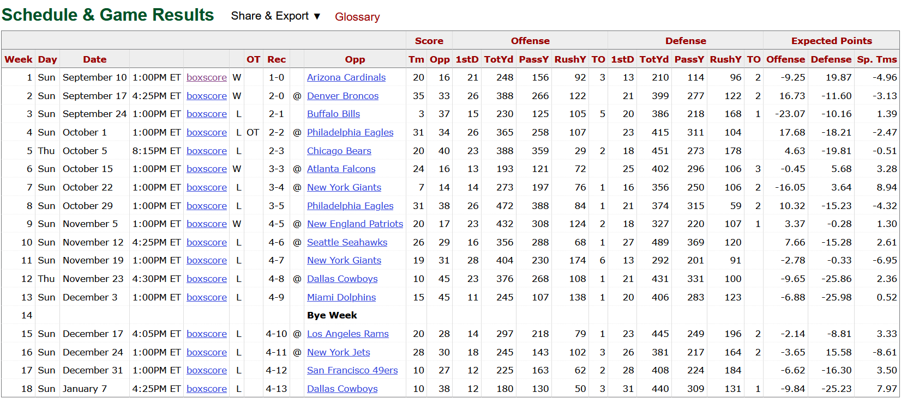
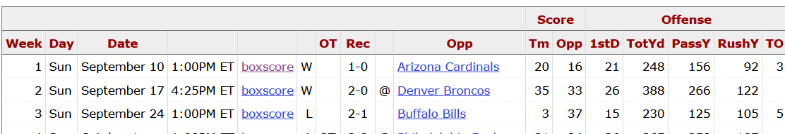

library(rvest) # Web scraping
library(dplyr) # Data manipulation
library(stringr) # String cleaning
library(rlang) # Advanced evaluation
library(purrr) # Functional tools
library(ggplot2) # VisualizationsSession 3: Extraction of NFL Data - HTML Scraping
Session 3: HTML Web Scraping - NFL Data Extraction
1. Goals & Objectives
- Identify basic HTML structure relevant for scraping
- Scrape tables and text from structured web pages
- Clean scraped data using tidyverse tools
- Compare different websites in terms of data accessibility
2. Conceptual Foundation
- HTML basics: tags, attributes, structure of web tables
- Using
rvestto read web pages and extract data - The importance of inspecting elements with browser tools
- Structured vs. unstructured sites: Wikipedia vs. ESPN
Step 1: Load Libraries
Discussion: Why are some of these packages (like purrr or rlang) useful for scraping tasks?
Step 2: Construct and Read URL
We start by creating the target URL for a given team and year.
# Step 2: Define team and year
team_name <- "was"
year <- 2023
# Step 2a: Construct full URL
generic_url <- paste0("https://www.pro-football-reference.com/teams/", team_name, "/", year, ".htm#all_games")Discussion: How could we make this part of a function so it is reusable?
See Also: https://www.pro-football-reference.com/teams/was/2023.htm#games
Step 3: Read and Extract HTML Tables
# Step 3: Read HTML page
webpage <- generic_url |> rvest::read_html()- When you run
read_html(url), it returns an HTML node pointer, not human-readable content. - This pointer references the structure of the web page in memory, but doesn’t display actual text or data.
- If you try to print this object directly, you’ll see something such as:
webpage[[1]] <pointer: 0x00000225...>
R is showing memory addresses of HTML elements, not the content.
This is because the HTML content must still be parsed or extracted.
Use rvest!
html_table(): extracts data from<table>elements.html_text(): extracts plain text from HTML nodes.html_nodes()orhtml_elements(): selects multiple nodes using CSS or XPath.html_element(): selects a single node.
Discussion: Why do you think web scraping tools separate “structure” from “content”? What are the pros and cons of working with HTML nodes directly?
From the webpage, grab the HTML tables using rvest::html_table().
# Step 3a: Extract all HTML tables
web_tables <- webpage |> rvest::html_table()The result is a list containing HTML table elements.
Discussion: What does this data structure look like?
Select the desired table, the 2023 Regular Season Table, which is the second table on the webpage. Use purrr::pluck() to select the table.

# Step 3b: Pick the regular season game table (check structure visually)
int_web_table <- web_tables |> purrr::pluck(2)Discussion: Why might this index (2) break in the future? What alternatives could we use to select the correct table more reliably?
Step 4: Clean and Prepare Column Names
Our first row contains more information regarding the columns than the header of the actual table. The merged cells in the header end up being repeated over the entire column group they represent, without providing useful information.
# Step 4a: Use first row as column names + clean them
firstrow_names <- int_web_table[1, ] |> unlist() |> as.character()Discussion: Why can’t we use dplyr slice()?
# Step 4b: Assign as column names
colnames(int_web_table) <- firstrow_names# Step 4c: Remove the first row (it's now the header)
table_1 <- int_web_table[-1, ]# Step 4d: Clean the column names with janitor
table_2 <- janitor::clean_names(table_1)Because these columns are neither labeled in the first row or the header, we must manually assign them names.

# Step 4e: Fix problem cases with no useful data within the header or first rows
table_3 <- table_2 |>
rename(
result = x_3,
game_location = x_4
)Discussion: What are the risks or tradeoffs in hardcoding columns like result and game_location? How could this break?
Step 5: Clean Table and Convert Data Types
Here we will use dplyr select and filter to drop columns that are not relevant, as well as the Bye Week where the team does not play a game.
# Step 5: Drop irrelevant columns and rows, keep only valid games
table_4 <- table_3 |>
select(!(x:x_2)) |>
filter(opp != "Bye Week")# Step 5a: Convert numeric-looking strings to numeric
table_5 <- table_4 |>
mutate(across(where(~ all(grepl("^\\s*-?\\d*\\.?\\d+\\s*$", .x))), ~ as.numeric(.)))# Step 5b: Handle factors and location labels
table_6 <- table_5 |>
mutate(
result = as.factor(result),
game_location = case_when(
game_location == "@" ~ "away",
game_location == "" ~ "home",
TRUE ~ game_location
) |> as.factor()
)# Step 5c: Final column cleanup
table_7 <- table_6 |>
rename_with(~ str_replace(., "^_", ""), .cols = starts_with("_"))Discussion: Why convert categorical variables like score_rslt or game_location to factors? What impact could that have on modeling or plotting?
Step 6: Wrap Process in a Function (Year Only)
By putting it all together, we can input a year for the Washington Commanders and get an extracted and cleaned table out.
# Step 6: Year-only function
was_year <- function(year) {
# Step 1: Define team and year
team_name <- "was"
# Step 1a: Construct full URL
generic_url <- paste0("https://www.pro-football-reference.com/teams/", team_name, "/", year, ".htm#all_games")
# Step 2: Read HTML page
webpage <- generic_url |> rvest::read_html()
# Step 2a: Extract all HTML tables
web_tables <- webpage |> rvest::html_table()
# Step 3: Pick the regular season game table (check structure visually)
int_web_table <- web_tables |> purrr::pluck(2)
# Step 3a: Use first row as column names + clean them
firstrow_names <- int_web_table[1, ] |> unlist() |> as.character()
# Step 3b: Assign as column names
colnames(int_web_table) <- firstrow_names
# Step 3c: Remove the first row (it's now the header)
table_1 <- int_web_table[-1, ]
# Step 3d: Clean the column names with janitor
table_2 <- janitor::clean_names(table_1)
# Step 3e: Fix problem cases with no useful data within the header or first rows
table_3 <- table_2 |>
rename(
result = x_3,
game_location = x_4
)
# Step 4: Drop irrelevant columns and rows, keep only valid games
table_4 <- table_3 |>
select(!(x:x_2)) |>
filter(opp != "Bye Week")
# Step 4a: Convert numeric-looking strings to numeric
table_5 <- table_4 |>
mutate(across(where(~ all(grepl("^\\s*-?\\d*\\.?\\d+\\s*$", .x))), ~ as.numeric(.)))
# Step 4b: Handle factors and location labels
table_6 <- table_5 |>
mutate(
result = as.factor(result),
game_location = case_when(
game_location == "@" ~ "away",
game_location == "" ~ "home",
TRUE ~ game_location
) |> as.factor()
)
# Step 4c: Final column cleanup
table_7 <- table_6 |>
rename_with(~ str_replace(., "^_", ""), .cols = starts_with("_"))
return(table_7)
}Test Year Only Function
head(was_year(2022))Step 7: Wrap Process in Full Function (Team + Year)
Now we will do the same task but while supplying team_name as a parameter as well as year.
# Step 7: Generalized function
fn_team_year <- function(team_name, year) {
# Step 2a: Construct full URL
generic_url <- paste0("https://www.pro-football-reference.com/teams/", team_name, "/", year, ".htm#all_games")
# Step 3: Read HTML page
webpage <- generic_url |> rvest::read_html()
# Step 3a: Extract all HTML tables
web_tables <- webpage |> rvest::html_table()
# Step 3b: Pick the regular season game table (check structure visually)
int_web_table <- web_tables |> purrr::pluck(2)
# Step 4a: Use first row as column names + clean them
firstrow_names <- int_web_table[1, ] |> unlist() |> as.character()
# Step 4b: Assign as column names
colnames(int_web_table) <- firstrow_names
# Step 4c: Remove the first row (it's now the header)
table_1 <- int_web_table[-1, ]
# Step 4d: Clean the column names with janitor
table_2 <- janitor::clean_names(table_1)
# Step 4e: Fix problem cases with no useful data within the header or first rows
table_3 <- table_2 |>
rename(
result = x_3,
game_location = x_4
)
# Step 5: Drop irrelevant columns and rows, keep only valid games
table_4 <- table_3 |>
select(!(x:x_2)) |>
filter(opp != "Bye Week")
# Step 5a: Convert numeric-looking strings to numeric
table_5 <- table_4 |>
mutate(across(where(~ all(grepl("^\\s*-?\\d*\\.?\\d+\\s*$", .x))), ~ as.numeric(.)))
# Step 5b: Handle factors and location labels
table_6 <- table_5 |>
mutate(
result = as.factor(result),
game_location = case_when(
game_location == "@" ~ "away",
game_location == "" ~ "home",
TRUE ~ game_location
) |> as.factor()
)
# Step 5c: Final column cleanup
table_7 <- table_6 |>
rename_with(~ str_replace(., "^_", ""), .cols = starts_with("_"))
return(table_7)
}Test Function (Team + Year)
head(fn_team_year("sfo", 2024))Step 8: Visualize Results
Use ggplot2 to create simple and insightful visualizations.
# Step 8: Line plot of points scored by Week
ggplot(fn_team_year("sfo", 2024), aes(x = week, y = tm)) +
geom_line(color = "steelblue", linewidth = 1.2) +
geom_point(size = 3) +
labs(
title = "Points Scored Over Time",
x = "Week",
y = "Points Scored"
) +
theme_minimal()# Step 8a: Compare performance by game location
ggplot(fn_team_year("sfo", 2024), aes(x = game_location, y = tm, fill = game_location)) +
geom_boxplot() +
labs(
title = "Points Scored: Home vs Away",
x = "Location",
y = "Points Scored"
) +
theme_minimal()Discussion: How might you visualize win/loss trends over the season? Could you include opponent information or passing yards?
Now that you’re familiar with HTML elements and scraping, this activity will walk through extracting, cleaning, and visualizing NFL team performance data.
3. Hands-On Coding Activity
Scrape sports statistics from a reliable table:
- Example: Wikipedia table of Olympic medal counts or NBA season stats
- Clean using
janitor::clean_names() - Compare scraped data from 2 sites (optional pair task)
4. Reflection
- How could students use scraped data in a final project?
- What scaffolds would help students inspect and trust their source?
5. Misc. Questions/Ideas
What is HTML and why it’s useful?
Examples: Wikipedia, sports sites (NFL, Olympics)
Structured vs unstructured web data
Reading the webpage source and locating tables/divs
Practice: Going back and forth between R and browser to inspect structure
Tidy HTML scraping practices using
rvestandjanitorDifferent approaches:
- Full walkthrough
- Partial scaffold
Activity:
- Scrape 2 sources (in pairs), compare
- Clean the data: name 3 needed transformations
- Use visualization and interpretation
- Discuss hardcoding and fragile selectors